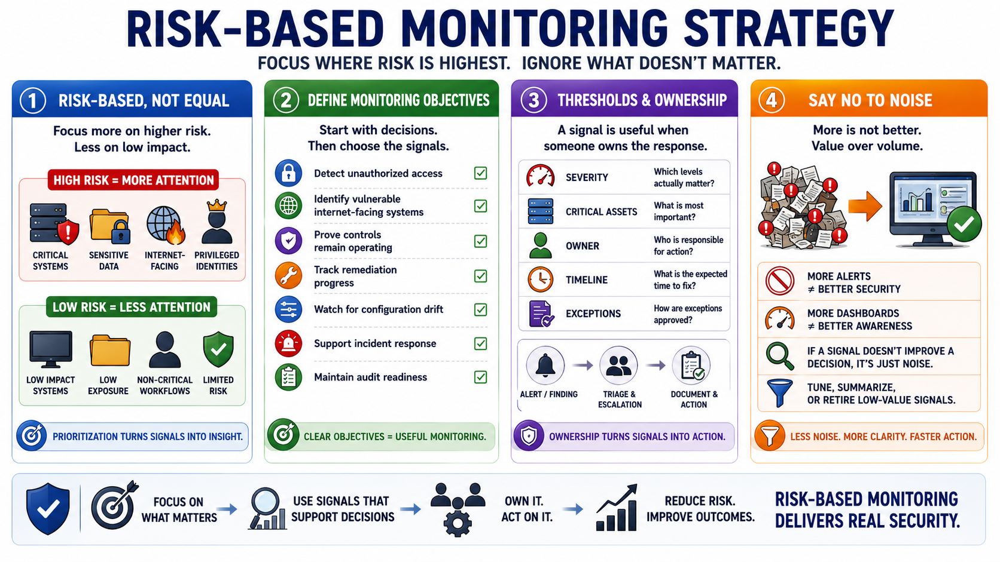

Risk-Based Monitoring Strategy
Connecting to LMS... Progress: in progress

Narration
A strong monitoring strategy is risk-based. It does not treat every asset, alert, or metric as equally important. Critical systems, sensitive data, internet-facing services, privileged identities, regulated environments, mission-critical workflows, known weaknesses, and active threat exposure deserve more attention than low-impact systems with limited exposure. Prioritization keeps monitoring from becoming a pile of disconnected signals.
Start by defining monitoring objectives. What decisions should the program support? Detect unauthorized access? Identify vulnerable internet-facing systems? Prove controls remain operating? Track remediation progress? Watch for configuration drift? Support incident response? Maintain audit readiness? Different objectives require different signals, thresholds, owners, and escalation paths. Without clear objectives, teams often collect data that no one uses.
Thresholds and ownership matter. A vulnerability finding becomes useful when the team knows which severity matters, which assets are critical, who owns remediation, what timeline is expected, and how exceptions are approved. An alert becomes useful when there is triage guidance, escalation criteria, and a way to document decisions. Monitoring without ownership creates noise. Monitoring with ownership creates action.
Risk-based monitoring also means saying no to low-value noise. More alerts do not automatically mean better security. More dashboards do not automatically mean better awareness. If a signal does not improve a decision, support evidence, trigger remediation, or inform risk, it should be tuned, summarized, or retired. The best programs reduce noise so meaningful changes are easier to see and easier to act on.